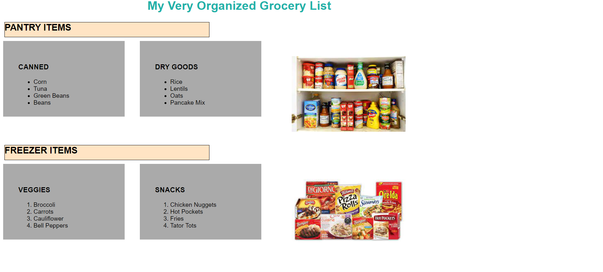
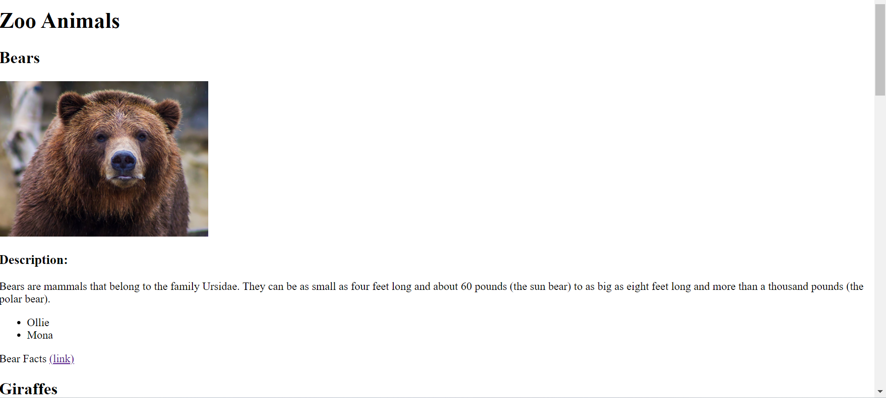
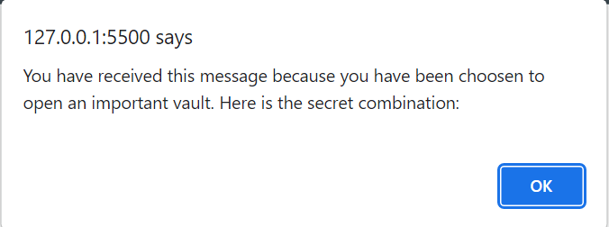

Here are some the projects I've constructed during my time as a programmer.
Grocery List Project
This was my first project in my Fullstack Academy class that challenged my knowledge on the basic concepts of HTML & CSS. Although this project is quite basic, it does show how these elements come together to form something so simple, yet so complex.
Not only does this show the possibilities of what HTML & CSS can do, but also shows how useful these tools are in the field of business. If a company wishes to launch a website but doesnt know where to start, this would be the place.
Zoo Animals Project
Another one of my accomplisments actually came very early in my studies of web development. This very simple website doesn't utilize any CSS elements, just HTML. This project was quite helpful in showing me how to properly utilize tags throughout the page structure.
In particular, this webpage shows certain elements such as list tags, both ordered and un-ordered. This better helps the user see the names and the species of all the animals at the zoo in a organized fashion. Organization like this makes a day at the zoo a seamless experience.
Bank Vault Project
Imagine this, you're given the task of creating at program that will show certain number combinations for a bank vault. As one could imagine, this project was crucial for helping me understand the power of javascript basics.
Knowing this, it is VERY important to get scripts exact. Last thing a programmer would want is to give the wrong bank information to customers, yikes. Although this project looks simple on face value there is way more than meets the eye.